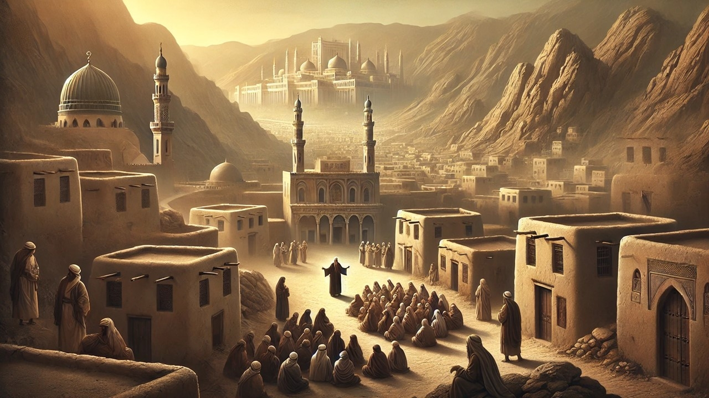
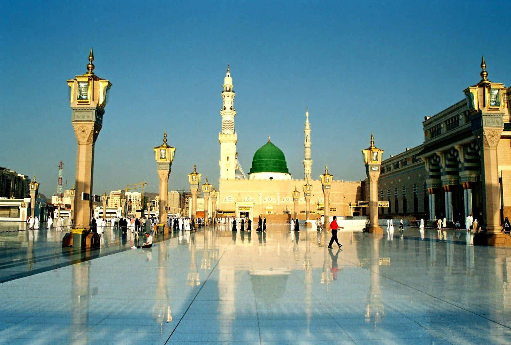
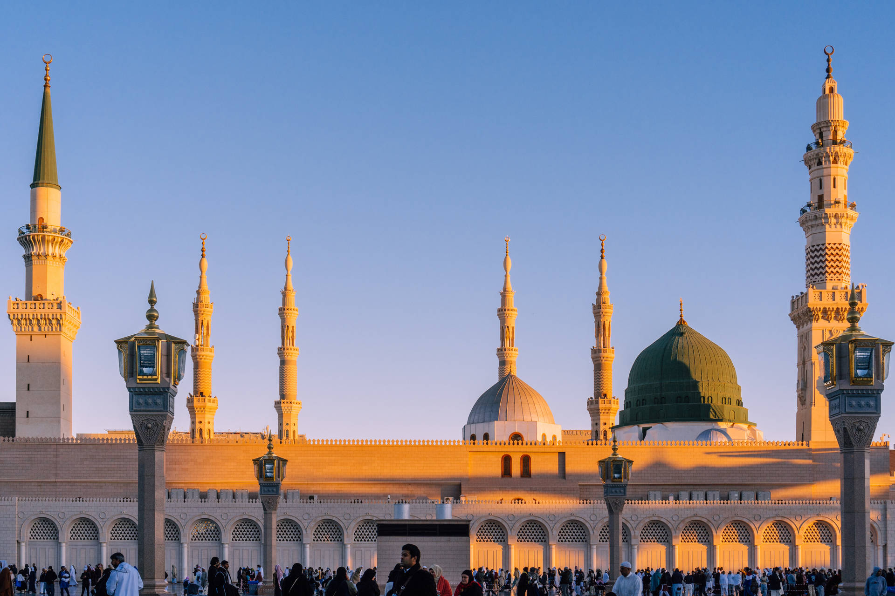
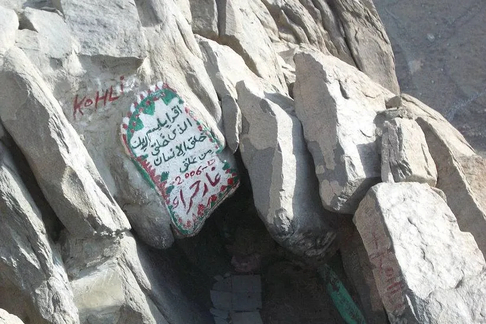

Introduction
Write a long introduction about the life of Prophet Muhammad SAW here.

Early Life
Write detailed paragraphs about the early life in Makkah.


The Mercy For All Humanity


Write a long introduction about the life of Prophet Muhammad SAW here.
Write detailed paragraphs about the early life in Makkah.




Prophet Muhammad SAW spent the early part of his life in the city of Makkah. The society of Makkah at that time was based on tribal traditions and many social injustices existed. Despite these conditions, Prophet Muhammad SAW was known for his honesty, truthfulness and fairness. People trusted him with their belongings and respected his character.
Even before prophethood, he avoided the negative practices of the society and maintained a life of dignity and moral integrity. His personality was marked by humility, patience and compassion toward others.

The first revelation marked a turning point in the history of humanity. While meditating in the Cave of Hira, the angel Gabriel brought the first verses of the Quran to Prophet Muhammad SAW. This moment began the mission of prophethood and the message of Islam.
The message called people to worship one God, abandon injustice and adopt a life based on honesty, compassion and justice.

Prophet Muhammad SAW is remembered for his remarkable leadership qualities. He demonstrated fairness in judgment, kindness toward the poor and patience during hardships. His leadership style emphasized consultation, respect and unity.
Even his opponents acknowledged his honesty and noble character.
The life and teachings of Prophet Muhammad SAW remain a timeless source of guidance. His example demonstrates how moral values, faith and compassion can transform individuals and societies.
Studying his life helps people understand the principles of justice, honesty and responsibility that form the foundation of a peaceful and balanced society.
Write a long explanation about the first revelation in Cave Hira.
The prophethood of Prophet Muhammad SAW represents one of the most significant moments in the history of humanity, marking the beginning of a divine mission that would guide millions of people toward faith, justice and moral responsibility.